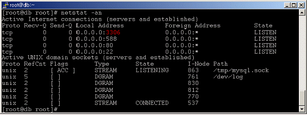
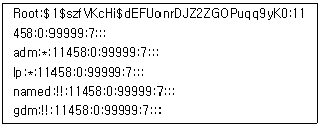
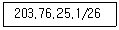
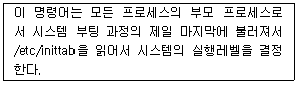
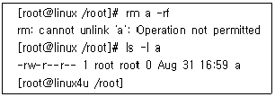
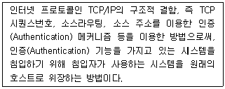
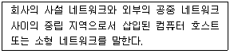
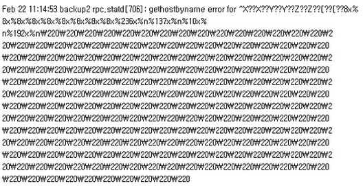

인터넷보안전문가-2급 (2016-04-10 기출문제)
1과목: 정보보호개론
1. SET(Secure Electronic Transaction)의 기술구조에 대한 설명으로 옳지 않은 것은?
- SET은 기본적으로 X.509 전자증명서에 기술적인 기반을 두고 있다.
- SET에서 제공하는 인터넷에서의 안전성은 모두 암호화에 기반을 두고 있고, 이 암호화 기술은 제 3자가 해독하기가 거의 불가능하다.
- 암호화 알고리즘에는 공개키 암호 시스템만 사용된다.
- 이 방식은 n명이 인터넷상에서 서로 비밀통신을 할 경우 'n(n-1)/2' 개 키를 안전하게 관리해야 하는 문제점이 있다.
(정답률: 81%)

2. 이산대수 문제에 바탕을 두며 인증메시지에 비밀 세션키를 포함하여 전달 할 필요가 없고 공개키 암호화 방식의 시초가 된 키 분배 알고리즘은?
- RSA 알고리즘
- DSA 알고리즘
- MD-5 해쉬 알고리즘
- Diffie-Hellman 알고리즘
(정답률: 80%)
3. 안전한 전자지불을 위하여 수립된 보안 대책과 사용 용도에 대한 연결이 옳지 않은 것은?
- PGP(Pretty Good Privacy) - 메일 보안 시스템
- PEM(Privacy-enhanced Electronic Mail) - 보안 메일의 IETF 표준
- Kerberos - 사용자 인증
- SNMPv2 - Web 문서 관리
(정답률: 76%)
4. 안전한 Linux Server를 구축하기 위한 방법으로 옳지 않은 것은?
- 불필요한 데몬을 제거한다.
- 불필요한 Setuid 프로그램을 제거한다.
- 시스템의 무결성을 주기적으로 검사한다.
- 무결성을 검사하기 위한 데이터베이스를 추후 액세스가 용이하게 하기 위하여 검사할 시스템에 저장하는게 좋다.
(정답률: 89%)
5. 보안과 관련된 용어의 정의나 설명으로 옳지 않은 것은?
- 프락시 서버(Proxy Server) - 내부 클라이언트를 대신하여 외부의 서버에 대해 행동하는 프로그램 서버
- 패킷(Packet) - 인터넷이나 네트워크상에서 데이터 전송을 위해 처리되는 기본 단위로 모든 인터페이스에서 항상 16KB의 단위로 처리
- 이중 네트워크 호스트(Dual-Homed Host) - 최소한 두 개의 네트워크 인터페이스를 가진 범용 컴퓨터 시스템
- 호스트(Host) - 네트워크에 연결된 컴퓨터 시스템
(정답률: 79%)
6. 다음 중 유형이 다른 암호 알고리즘은?
- RSA(Rivest-Shamir-Adelman)
- AES(Advanced Signature Algorithm)
- DSA(Digital Signature Algorithm)
- KCDSA(Korea Certification-based Digital Signature Algorithm)
(정답률: 57%)
7. IPSec 프로토콜에 대한 설명으로 옳지 않은 것은?
- 네트워크 계층인 IP 계층에서 보안 서비스를 제공하기 위한 보안 프로토콜이다.
- 기밀성 기능은 AH(Authentication Header)에 의하여 제공되고, 인증 서비스는 ESP(Encapsulating Security Payload) 에 의하여 제공된다.
- 보안 연계(Security Association)는 사용된 인증 및 암호 알고리즘, 사용된 암호키, 알고리즘의 동작 모드 그리고 키의 생명 주기 등을 포함한다.
- 키 관리는 수동으로 키를 입력하는 수동방법과 IKE 프로토콜을 이용한 자동방법이 존재한다.
(정답률: 66%)
8. 패킷 필터링의 단점으로 옳지 않은 것은?
- 현재의 필터링 도구는 모든 패킷에 대해 완벽한 필터링을 하지 못한다.
- NFS와 같은 일부 프로토콜은 패킷 필터링에 어울리지 않는다.
- 필터링은 클라이언트 컴퓨터에 대한 특정한 환경설정이나 사용자에 대한 훈련이 요구되지 않는다.
- 패킷 필터링이 실패하면 거부되어야 하는 패킷을 통과시키는 경우가 많다.
(정답률: 69%)
9. 금융기관이나 인터넷 상에서 많은 사람들로부터 적은 금액을 조금씩 빼내고 피해자는 사건이 알려지기 전까지 전혀 눈치 채지 못하는 컴퓨터 사기수법은?
- Scavenging
- 논리 폭탄(Logic Bomb)
- 살라미(Salami) 기법
- 자료의 부정변개(Data Diddling)
(정답률: 88%)
10. 암호 시스템의 일반적인 세 가지 충족 요건으로 옳지 않은 것은?
- 암호화키에 의하여 암호화 및 복호화가 효과적으로 이루어져야 한다.
- 암호화키는 반드시 블록화되어야 한다.
- 암호 시스템은 사용이 용이하여야 한다.
- 암호화 알고리즘 자체 보다는 암호키에 의해 보안이 이루어져야 한다.
(정답률: 62%)
2과목: 운영체제
11. DHCP(Dynamic Host Configuration Protocol) 서버에서 이용할 수 있는 IP Address 할당 방법 중에서 DHCP 서버가 관리하는 IP 풀(Pool)에서 일정기간 동안 IP Address를 빌려주는 방식은?
- 수동 할당
- 자동 할당
- 분할 할당
- 동적 할당
(정답률: 83%)
12. Linux 시스템에서 '-rwxr-xr-x' 퍼미션을 나타내는 숫자는?
- 755
- 777
- 766
- 764
(정답률: 83%)
13. Windows Server에서 감사정책을 설정하고 기록을 남길 수 있는 그룹은?
- Administrators
- Security Operators
- Backup Operators
- Audit Operators
(정답률: 81%)
14. Windows Sever에서 지원하는 PPTP(Point to Point Tunneling Protocol)에 대한 설명으로 옳지 않은 것은?
- PPTP 헤드 압축을 지원한다.
- Microsoft에서 제안한 VPN Protocol 이다.
- PPP 암호화를 지원한다.
- IP 기반 네트워크에서 사용가능하다.
(정답률: 50%)
15. Linux 시스템을 곧바로 재시작 하는 명령으로 옳지 않은 것은?
- shutdown -r now
- shutdown -r 0
- halt
- reboot
(정답률: 81%)
16. 파일 퍼미션이 현재 664인 파일이 '/etc/file1.txt' 라는 이름으로 저장되어 있다. 이 파일을 batman 이라는 사용자의 홈디렉터리에서 ln 명령을 이용하여 'a.txt' 라는 이름으로 심볼릭 링크를 생성하였는데, 이 'a.txt' 파일의 퍼미션 설정상태는?
- 664
- 777
- 775
- 700
(정답률: 70%)
17. Linux 구조 중 다중 프로세스·다중 사용자와 같은 주요 기능을 지원·관리하는 것은?
- Kernel
- Disk Manager
- Shell
- X Window
(정답률: 81%)
18. Linux 콘솔 상에서 네트워크 어댑터 'eth0'을 '192.168.1.1' 이라는 주소로 사용하고 싶을 때 올바른 명령은?
- ifconfig eth0 192.168.1.1 activate
- ifconfig eth0 192.168.1.1 deactivate
- ifconfig eth0 192.168.1.1 up
- ifconfig eth0 192.168.1.1 down
(정답률: 86%)
19. Linux에서 호스트 이름을 IP Address로 변환시켜 주는 DNS 데몬은?
- lpd
- netfs
- nscd
- named
(정답률: 81%)
20. Linux 시스템에서 현재 사용자가 수행되는 백그라운드 작업을 출력하는 명령어는?
- jobs
- kill
- ps
- top
(정답률: 85%)
21. RPM의 설치나 제거시에 사용하는 옵션 중에서 '--nodeps'의 의미는?
- 어떤 패키지의 의존성을 무시하고 설치하고자 할때
- 디렉터리를 마치 '/'처럼 생각하고 설치하고자 할때
- 패키지를 실제로 설치하지 않고 충돌이나 의존성 문제가 있는지 검사만 할 때
- 새로운 패키지를 지우고 구 버전의 패키지로 교체할때
(정답률: 78%)
22. Linux의 기본 명령어 'man'의 의미는?
- 명령어에 대한 사용법을 알고 싶을 때 사용하는 명령어
- 윈도우나 쉘을 빠져 나올 때 사용하는 명령어
- 지정한 명령어가 어디에 있는지 경로를 표시
- 기억된 명령어를 불러내는 명령어
(정답률: 92%)
23. VI(Visual Interface) 명령어 중에서 변경된 내용을 저장한 후 종료하고자 할 때 사용해야 할 명령어는?
- :wq
- :q!
- :e!
- $
(정답률: 88%)
24. Redhat Linux 시스템의 각 디렉터리 설명 중 옳지 않은 것은?
- /usr/X11R6 : X-Window의 시스템 파일들이 위치한다.
- /usr/include : C 언어의 헤더 파일들이 위치한다.
- /boot : LILO 설정 파일과 같은 부팅 관련 파일들이 들어있다.
- /dev : 디바이스 장치 파일들이 위치한다.
(정답률: 65%)
25. 프로토콜을 POP3 대신에 IMAP를 쓰는 환경에서 vi편집기를 이용해서 POP 프로토콜을 주석처리 하고, IMAP 프로토콜의 주석을 제거 하였지만 서비스가 정상적으로 이루어지지 않고 있다면 그 원인에 해당하는 것은?
- IMAP 프로토콜은 POP3를 대신할 수 없기 때문이다.
- Sendmail과 IMAP는 근본적으로 상관이 없기 때문이다.
- 데몬 설정 파일을 변경한 후 데몬을 재실행 해주지 않았기 때문이다.
- 해당 포트가 열렸기 때문이다.
(정답률: 85%)
26. 아파치 웹서버에 대한 설명으로 잘못된 것은?
- 초기엔 유닉스 계열의 운영체제에서 동작하는 웹 서버였다.
- 공개 프로그램이므로 소스 형태로 배포되기도 하며, 다양한 시스템 환경에 적합하도록 실행 가능한 형태로 배포되기도 한다.
- http.conf는 웹 서버를 위한 환경 설정 파일로써, 서비스 타입, 포트 번호, 사용자 그룹, 웹서버 관리자 전자메일 주소, 서버 루트를 지정하는 디렉터리, 에러 로그가 기록될 파일 경로 등을 포함한다.
- 설정 파일에서 웹 서버가 사용할 사용자와 그룹을 나타내는 설정 변수인 User와 Group은 'root' 로 설정해야 한다.
(정답률: 74%)
27. Linux 시스템의 경우 사용자의 암호와 같은 중요한 정보가 /etc/passwd 파일 안에 보관되기 때문에 이 파일을 이용해서 해킹을 하는 경우가 있다. 이를 보완하기 위해서 암호정보만 따로 파일로 저장하는 방법의 명칭은?
- DES Password System
- RSA Password System
- MD5 Password System
- Shadow Password System
(정답률: 75%)
28. Linux에서 'netstat -an' 명령으로 시스템을 확인한 결과 다음과 같은 결과가 나왔다. 아래 '3306'번 포트는 어떤 데몬이 가동될 때 열리는 포트인가?(단, 시스템의 기본 포트는 Well-Known 포트를 사용한다.)

- MySQL
- DHCP
- Samba
- Backdoor
(정답률: 88%)
29. Linux 시스템의 shadow 파일 내용에 대한 설명으로 올바른 것은?

- lp에서 '*'은 로그인 쉘을 갖고 있으며, 시스템에 누구나 로그인할 수 있음을 의미한다.
- gdm에서 '!!'은 로그인 쉘을 갖고 있지만 누구도 계정을 통해서 로그인할 수 없도록 계정이 잠금 상태라는 것을 의미한다.
- 로그인 계정이 아닌 시스템 계정은 named와 gdm 이다.
- root의 암호는 11458 이다
(정답률: 71%)
30. 파일이 생성된 시간을 변경하기 위해 사용하는 Linux 명령어는?
- chown
- chgrp
- touch
- chmod
(정답률: 79%)
3과목: 네트워크
31. 전화망에 일반적으로 Twisted-Pair Cable을 많이 사용한다. Twisted-Pair Cable을 꼬아 놓은 가장 큰 이유는?
- 수신기에서 잡음을 감소하기 위하여
- 관리가 용이하게 하기 위하여
- 꼬인 선의 인장 강도를 크게 하기 위하여
- 구분을 용이하게 하기 위하여
(정답률: 76%)
32. 프로토콜의 기능 중 전송을 받는 개체에서 발송지로부터 오는 데이터의 양이나 속도를 제한하는 기능은?
- 흐름 제어
- 에러 제어
- 순서 제어
- 접속 제어
(정답률: 90%)
33. IP Address를 Ethernet Address로 매핑하는 테이블을 동적으로 구축하는 프로토콜로 이 경우 Ethernet의 브로드캐스트 기능을 사용하게 되는 프로토콜은?
- ARP
- RARP
- RIP
- IP
(정답률: 76%)
34. 아래 내용에 해당하는 서브넷 마스크 값은?

- 255.255.255.192
- 255.255.255.224
- 255.255.255.254
- 255.255.255.0
(정답률: 74%)
35. IPv6 프로토콜의 구조는?
- 32bit
- 64bit
- 128bit
- 256bit
(정답률: 92%)
36. ICMP(Internet Control Message Protocol)의 메시지 타입으로 옳지 않은 것은?
- Source Quench
- Port Destination Unreachable
- Echo Request, Echo Reply
- Timestamp Request, Timestamp Reply
(정답률: 63%)
37. Routed Protocol로 옳지 않은 것은?
- TCP/IP
- OSPF
- IPX/SPX
- Appletalk
(정답률: 47%)
38. IPv4 Address에 관한 설명 중 옳지 않은 것은?
- IP Address는 32bit 구조를 가지고 A, B, C, D 네 종류의 Class로 구분한다.
- 127.0.0.1은 루프 백 테스트를 위한 IP Address라고 할 수 있다.
- B Class는 중간 규모의 네트워크를 위한 주소 Class로 네트워크 ID는 128~191 사이의 숫자로 시작한다.
- D Class는 멀티캐스트용으로 사용된다.
(정답률: 69%)
39. 응용 서비스와 프로토콜이 잘못 짝지어진 것은?
- 전자메일 서비스 : SMTP, POP3, IMAP
- WWW : HTTP 프로토콜
- 원격 접속 : ARP 프로토콜
- 파일전송 : FTP
(정답률: 83%)
40. 다음은 어떤 명령어에 대한 설명인가?

- runlevel
- init
- nice
- halt
(정답률: 74%)
41. HDLC 프레임의 구조 순서로 올바르게 연결된 것은?
- 플래그 시퀀스 - 제어부 - 어드레스부 - 정보부 - 프레임 검사 시퀀스 - 플래그 시퀀스
- 플래그 시퀀스 - 어드레스부 - 정보부 - 제어부 - 프레임 검사 시퀀스 - 플래그 시퀀스
- 플래그 시퀀스 - 어드레스부 - 제어부 - 정보부 - 프레임 검사 시퀀스 - 플래그 시퀀스
- 플래그 시퀀스 - 정보부 - 어드레스부 - 제어부 - 프레임 검사 시퀀스 - 플래그 시퀀스
(정답률: 67%)
42. IP Address '172.16.0.0'인 경우에 이를 14개의 서브넷으로 나누어 사용하고자 할 경우 서브넷 마스크는?
- 255.255.228.0
- 255.255.240.0
- 255.255.248.0
- 255.255.255.248
(정답률: 73%)
43. IGRP(Interior Gateway Routing Protocol)의 특징으로 옳지 않은 것은?
- 거리벡터 라우팅 프로토콜이다.
- 메트릭을 결정할 때 고려요소 중 하나는 링크의 대역폭이 있다.
- 네트워크 사이의 라우팅 최적화에 효율적이다.
- RIP(Routing Information Protocol)와 같이 15홉 이상의 인터네트워크를 지원할 수 없으며 비교적 단순한 네트워크를 위해 개발되었다.
(정답률: 69%)
44. 패킷(Packet)에 있는 정보로 옳지 않은 것은?
- 출발지 IP Address
- TCP 프로토콜 종류
- 전송 데이터
- 목적지 IP Address
(정답률: 76%)
45. TCP 포트 중 25번 포트가 하는 일반적인 역할은?
- Telnet
- FTP
- SMTP
- SNMP
(정답률: 78%)
4과목: 보안
46. SSL(Secure Socket Layer)에 관한 설명으로 옳지 않은 것은?
- 서버 인증, 클라이언트 인증, 기밀성 보장의 세 가지 서비스를 제공한다.
- SSL 프로토콜은 SSL Hand Shake 프로토콜과 SSL Record 프로토콜로 나뉜다.
- SSL Record 프로토콜은 서버·클라이언트 인증 기능과 암호 통신에 사용할 대칭키를 분배하는 역할을 수행한다.
- 데이터 암호화를 위한 비밀키를 Hand Shake 프로토콜 단계에서 정한 후에 키를 사용하여 암호화된 메시지로 상대방의 신원을 증명할 수 있다.
(정답률: 62%)
47. Linux에서 root 권한 계정이 'a' 라는 파일을 지우려 했을때 나타난 결과이다. 이 파일을 지울 수 있는 방법은?

- 파일크기가 '0' 바이트이기 때문에 지워지지 않으므로, 파일에 내용을 넣은 후 지운다.
- 현재 로그인 한 사람이 root가 아니므로, root로 로그인한다.
- chmod 명령으로 쓰기금지를 해제한다.
- chattr 명령으로 쓰기금지를 해제한다.
(정답률: 74%)
48. 다음 중 Windows Server 운영체제에서 이벤트를 감사할 때 감사할 수 있는 항목으로 옳지 않은 것은?
- 파일 폴더에 대한 액세스
- 사용자의 로그온과 로그오프
- 메모리에 상주된 프로세스의 사용 빈도
- 액티브 디렉터리에 대한 변경 시도
(정답률: 66%)
49. 다음에서 설명하는 기법은?

- IP Sniffing
- IP Spoofing
- Race Condition
- Packet Filtering
(정답률: 73%)
50. 서비스 거부 공격(Denial of Service)의 특징으로 옳지 않은 것은?
- 공격을 통해 시스템의 정보를 몰래 빼내가거나, 루트 권한을 획득할 수 있다.
- 시스템의 자원을 부족하게 하여 원래 의도된 용도로 사용하지 못하게 하는 공격이다.
- 다수의 시스템을 통한 DoS 공격을 DDoS(Distributed DoS)라고 한다.
- 라우터, 웹, 전자 우편, DNS 서버 등 모든 네트워크 장비를 대상으로 이루어질 수 있다.
(정답률: 75%)
51. Windows Server에서 지원하는 Data의 신뢰성을 보장하기 위한 기능에 속하지 않는 것은?
- 파일 보호 매커니즘을 사용하여 시스템에 중요한 파일을 덮어쓰지 않도록 보호한다.
- 드라이버 인증을 사용하여 드라이버의 신뢰성을 평가할 수 있다.
- 분산 파일 시스템을 사용하여 공유된 파일에 보안을 유지한 상태로 접근할 수 있다.
- 커버로스(Kerberos) 인증을 사용하여 Windows Server와 기타 지원 시스템에 한 번에 로그온할 수 있다.
(정답률: 60%)
52. 다음은 어떤 보안 도구를 의미하는가?

- IDS
- DMZ
- Firewall
- VPN
(정답률: 77%)
53. 네트워크 취약성 공격으로 옳지 않은 것은?
- Scan 공격
- IP Spoofing 공격
- UDP 공격
- Tripwire 공격
(정답률: 77%)
54. Linux 시스템에서 Rootkit의 역할로 옳지 않은 것은?
- 불법적인 권한을 다시 획득하는 역할을 수행한다.
- 시스템 상에서 침입자의 흔적을 지워주는 역할을 수행한다.
- 정상적인 프로그램처럼 보이지만 내부에 악의적인 코드가 내장되어있다.
- 자가 복제를 통해 자신의 존재를 숨기면서 다른 시스템과의 접속을 시도한다.
(정답률: 67%)
55. 침입차단시스템(Intrusion Prevention System)의 단점으로 잘못된 것은?
- 악의적인 내부 사용자로부터 시스템 정보를 보호할 수 없다.
- 자신을 통하지 않는 접속으로부터 시스템을 보호할 수 없다.
- 완전히 새로운 형태의 위협에 대해서는 방어할 수 없다.
- 악의적인 대량의 패킷 정보에 대해서는 시스템을 보호할 수 없다.
(정답률: 57%)
56. Linux에서 Nmap의 옵션 중 상대방의 OS를 알아내는 옵션은?
- [root@icqa bin]#./nmap -O www.target.com
- [root@icqa bin]#./nmap -I www.target.com
- [root@icqa bin]#./nmap -sS www.target.com
- [root@icqa bin]#./nmap -sP www.target.com
(정답률: 85%)
57. 침해사고를 당한 시스템에 아래와 같은 로그가 남겨져 있다. 어떠한 공격에 의한 것인가?

- in.lpd를 이용한 버퍼 오버플로우 공격
- DNS Query 버퍼 오버플로우 공격
- amd 버퍼 오버플로우 공격
- rpc.statd을 이용한 버퍼 오버플로우 공격
(정답률: 49%)
58. 보안상의 문제가 있는 시스템 프로그램과 크래커(Cracker)의 Exploit Program이 서로 경쟁 상태에 이르게 하여 시스템 프로그램이 갖는 권한으로 파일에 대한 접근을 가능하게 하는 방법은?
- Race Condition Problem
- Boundary Condition Problem
- Input Validation Problem
- Access Validation Problem
(정답률: 64%)
59. 대형 응용 프로그램을 개발하면서, 전체 시험실행을 할 때 발견되는 오류를 쉽게 해결하거나 처음부터 중간에 내용을 볼 수 있는 부정루틴을 삽입해, 컴퓨터의 정비나 유지 보수를 핑계 삼아 컴퓨터 내부의 자료를 뽑아가는 해킹 행위는?
- Trap Door
- Asynchronous Attacks
- Super Zapping
- Salami Techniques
(정답률: 70%)
60. PGP(Pretty Good Privacy)에서 지원하지 못하는 기능은?
- 메세지 인증(Message Integrity) : 전송도중에 내용이 불법적으로 변경되었는가를 확인해 주는 기능
- 사용자 인증(User Authentication) : 메일을 실제로 보낸 사람이 송신자라고 주장한 사람과 일치하는 가를 확인해 주는 기능
- 송신부인방지(Nonrepudiation of Origin) : 송신자가 메일을 송신하고서 송신하지 않았다고 주장하는 경우, 이를 확인해 주는 기능
- 수신부인방지(Non-deniability of receipt) : 메일을 수신하고서 나중에 받지 않았다고 주장하지 못하게 해주는 기능
(정답률: 66%)